Chapter 4 Phylogenetic Tree Visualization
4.1 Introduction
There are many software packages and webtools that are designed for displaying phylogenetic trees, such as TreeView (Page 2002), FigTree11, TreeDyn (Chevenet et al. 2006), Dendroscope (Huson and Scornavacca 2012), EvolView (He et al. 2016) and iTOL (Letunic and Bork 2007), etc.. Only several of them, such as FigTree, TreeDyn and iTOL, allow users to annotate the trees with coloring branches, highlighted clades and tree features. However, their pre-defined annotating functions are usually limited to some specific phylogenetic data. As phylogenetic trees become more widely used in multidisciplinary studies, there is an increasing need to incorporate various types of the phylogenetic covariates and other associated data from different sources into the trees for visualizations and further analyses. For instance, influenza virus has a wide host range, diverse and dynamic genotypes and characteristic transmission behaviors that are mostly associated with the virus evolution and essentially among themselves. Therefore, in addition to standalone applications that focus on each of the specific analysis and data type, researchers studying molecular evolution need a robust and programmable platform that allows the high levels integration and visualization of many of these different aspects of data (raw or from other primary analyses) over the phylogenetic trees to identify their associations and patterns.
To fill this gap, we developed ggtree, a package for the R programming language (R Core Team 2016) released under the Bioconductor project (Gentleman et al. 2004). The ggtree is built to work with phylogenetic data object generated by treeio, and display tree graphics with ggplot2 package (Wickham 2016) that was based on the grammar of graphics (Wilkinson et al. 2005).
The R language is increasingly being used in phylogenetics. However, a comprehensive package, designed for viewing and annotating phylogenetic trees, particularly with complex data integration, is not yet available. Most of the R packages in phylogenetics focus on specific statistical analyses rather than viewing and annotating the trees with more generalized phylogeny-associated data. Some packages, including ape (Paradis, Claude, and Strimmer 2004) and phytools (Revell 2012), which are capable of displaying and annotating trees, are developed using the base graphics system of R. In particular, ape is one of the fundamental package for phylogenetic analysis and data processing. However, the base graphics system is relatively difficult to extend and limits the complexity of tree figure to be displayed. OutbreakTools (Jombart et al. 2014) and phyloseq (McMurdie and Holmes 2013) extended ggplot2 to plot phylogenetic trees. The ggplot2 system of graphics allows rapid customization and exploration of design solutions. However these packages were designed for epidemiology and microbiome data respectively and did not aim to provide a general solution for tree visualization and annotation. The ggtree package also inherits versatile properties of ggplot2, and more importantly allows constructing complex tree figures by freely combining multiple layers of annotations using the tree associated data imported from different sources (importation using treeio package is detailed in Chapter 1).
4.2 Visualizing Phylogenetic Tree with ggtree
The ggtree package is designed for annotating phylogenetic trees with their associated data of different types and from various sources. These data could come from users or analysis programs, and might include evolutionary rates, ancestral sequences, etc. that are associated with the taxa from real samples, or with the internal nodes representing hypothetic ancestor strain/species, or with the tree branches indicating evolutionary time courses. For instance, the data could be the geographic positions of the sampled avian influenza viruses (informed by the survey locations) and the ancestral nodes (by phylogeographic inference) in the viral gene tree (Lam et al. 2012).
The ggtree supports ggplot2’s graphical language, which allows high level of customization, is intuitive and flexible. It is notable that ggplot2 itself does not provide low-level geometric objects or other support for tree-like structures, and hence ggtree is a useful extension on that regard. Even though the other two phylogenetics-related R packages, OutbreakTools and phyloseq, are developed based on ggplot2, the most valuable part of ggplot2 syntax - adding layers of annotations - is not supported in these packages. For example, if we have plotted a tree without taxa labels, OutbreakTools and phyloseq provide no easy way for general R users, who have little knowledge about the infrastructures of these packages, to add a layer of taxa labels. The ggtree extends ggplot2 to support tree objects by implementing a geometric layer, geom_tree, to support visualizing tree structure. In ggtree, viewing a phylogenetic tree is relatively easy, via the command ggplot(tree_object) + geom_tree() + theme_tree() or ggtree(tree_object) for short. Layers of annotations can be added one by one via the + operator. To facilitate tree visualization, ggtree provides several geometric layers, including geom_treescale for adding legend of tree branch scale (genetic distance, divergence time, etc.), geom_range for displaying uncertainty of branch lengths (confidence interval or range, etc.), geom_tiplab for adding taxa label, geom_tipoint and geom_nodepoint for adding symbols of tips and internal nodes, geom_hilight for highlighting a clade with rectangle, and geom_cladelabel for annotating a selected clade with a bar and text label, etc.. A full list of geometric layers provided by ggtree are summarized in Table 5.1.
To view a phylogenetic tree, we first need to parse the tree file into R.
Treeio package parses diverse annotation data from different software outputs into S4 phylogenetic data objects. The ggtree mainly utilizes these S4 objects to display and annotate the tree. There are also other R packages that defined S3/S4 classes to store phylogenetic trees with their specific associated data, including phylo4 and phylo4d defined in phylobase package, obkdata defined in OutbreakTools package, and phyloseq defined in phyloseq package. All these tree objects are also supported in ggtree and their specific annotation data can be used to annotate the tree in ggtree. Such compatibility of ggtree facilitates the integration of data and analysis results.
library("treeio")
library("ggtree")
nwk <- system.file("extdata", "sample.nwk", package="treeio")
tree <- read.tree(nwk)4.2.1 Basic Tree Visualization
The ggtree package extends ggplot2 (Wickham 2009) package to support viewing phylogenetic tree.
It implements geom_tree layer for displaying phylogenetic tree, as shown below in Figure 4.1A.
ggplot(tree, aes(x, y)) + geom_tree() + theme_tree()The function, ggtree, was implemented as a short cut to visualize a tree, and it works exactly the same as shown above.
ggtree takes all the advantages of ggplot2. For example, we can change the color, size and type of the lines as we do with ggplot2 (Figure 4.1B).
ggtree(tree, color="firebrick", size=1, linetype="dotted")By default, the tree is viewed in ladderize form, user can set the parameter ladderize = FALSE to disable it (Figure 4.1C).
ggtree(tree, ladderize=FALSE)The branch.length is used to scale the edge, user can set the parameter branch.length = “none” to only view the tree topology (cladogram, Figure 4.1D) or other numerical variable to scale the tree (e.g. dN/dS, see also in Chapter 5).
ggtree(tree, branch.length="none")Figure 4.1: Basic tree visualization.
4.2.2 Layouts of phylogenetic tree
Viewing phylogenetic with ggtree is quite simple, just pass the tree object to ggtree function. We have developed several types of layouts for tree presentation (Figure 4.2), including rectangular (by default), slanted, circular, fan, unrooted (equal angle and daylight methods), time-scaled and 2-dimensional layouts.
Here are examples of visualizing a tree with different layouts:
library(ggtree)
set.seed(2017-02-16)
tree <- rtree(50)
ggtree(tree)
ggtree(tree, layout="slanted")
ggtree(tree, layout="circular")
ggtree(tree, layout="fan", open.angle=120)
ggtree(tree, layout="equal_angle")
ggtree(tree, layout="daylight")
ggtree(tree, branch.length='none')
ggtree(tree, branch.length='none', layout='circular')
ggtree(tree, layout="daylight", branch.length = 'none')Figure 4.2: Tree layouts. Phylogram: rectangular layout (A), slanted layout (B), circular layout (C) and fan layout (D). Unrooted: equal-angle method (E) and daylight method (F). Cladogram: rectangular layout (G), circular layout (H) and unrooted layout (I). Slanted and fan layouts for cladogram are also supported.
There are also other possible layouts that can be drawn by modifying scales/coordination, for examples, reverse label of time scale, repropotion circular/fan tree, etc..
ggtree(tree) + scale_x_reverse()
ggtree(tree) + coord_flip()
ggtree(tree) + scale_x_reverse() + coord_flip()
print(ggtree(tree), newpage=TRUE, vp=grid::viewport(angle=-30, width=.9, height=.9))
ggtree(tree, layout='slanted') + coord_flip()
ggtree(tree, layout='slanted', branch.length='none') +
coord_flip() + scale_y_reverse() +scale_x_reverse()
ggtree(tree, layout='circular') + xlim(-10, NA)
ggtree(tree) + scale_x_reverse() + coord_polar(theta='y')
ggtree(tree) + scale_x_reverse(limits=c(10, 0)) + coord_polar(theta='y')Figure 4.3: Derived Tree layouts. right-to-left rectangular layout (A), bottom-up rectangular layout (B), top-down rectangular layout (C), rotated rectangular layout (D), bottom-up slanted layout (E), top-down slanted layout (Cladogram) (F), XX layout (G), XX layout (H) and XX layout (I).
Phylogram. Layouts of rectangular, slanted, circular and fan are supported to visualize phylogram (by default, with branch length scaled) as demonstrated in Figure 4.2A, B, C and D.
Unrooted layout. Unrooted (also called ‘radial’) layout is supported by equal-angle and daylight algorithms, user can specify unrooted layout algorithm by passing “equal_angle” or “daylight” to layout parameter to visualize the tree. Equal-angle method was proposed by Christopher Meacham in PLOTREE, which was incorporated in PHYLIP (Retief 2000). This method starts from the root of the tree and allocates arcs of angle to each subtrees proportional to the number of tips in it. It iterates from root to tips and subdivides the angle allocated to a subtree into angles for its dependent subtrees. This method is fast and was implemented in many software packages. As shown in Figure 4.2E, equal angle method has a drawback that tips are tend to be clustered together and leaving many spaces unused. The daylight method starts from an initial tree built by equal angle and iteratively improves it by successively going to each interior node and swinging subtrees so that the arcs of “daylight” are equal (Figure 4.2F). This method was firstly implemented in PAUP* (Wilgenbusch and Swofford 2003).
Cladogram. To visualize cladogram that without branch length scaling and only display the tree structure, branch.length is set to “none” and it works for all types of layouts (Figure 4.2G, H and I).
Time-scaled layout. For time-scaled tree, the most recent sampling date must be specified via the mrsd parameter and ggtree will scaled the tree by sampling (tip) and divergence (internal node) time, and a time scale axis will be displayed under the tree by default.
beast_file <- system.file("examples/MCC_FluA_H3.tree",
package="ggtree")
beast_tree <- read.beast(beast_file)
ggtree(beast_tree, mrsd="2013-01-01") + theme_tree2()Figure 4.4: Time-scaled layout. The x-axis is the timescale (in units of year). The divergence time was inferred by BEAST using molecular clock model.
Two-dimensional tree layout. A two-dimensional tree is a projection of the phylogenetic tree in a space defined by the associated phenotype (numerical or categorical trait, on the y-axis) and tree branch scale (e.g., evolutionary distance, divergent time, on the x-axis). The phenotype can be a measure of certain biological characteristics of the taxa and hypothetical ancestors in the tree. This is a new layout we proposed in ggtree, which is useful to track the virus phenotypes or other behaviors (y-axis) changing with the virus evolution (x-axis). In fact, the analysis of phenotypes or genotypes over evolutionary time have been widely used for study influenza virus evolution (Neher et al. 2016), though such analysis diagrams are not tree-like, i.e., no connection between data points, unlike our two-dimensional tree layout that connect data points with the corresponding tree branches. Therefore, this new layout we provided will make such data analysis easier and more scalable for large sequence data sets of influenza viruses.
In this example, we used the previous time-scaled tree of H3 human and swine influenza viruses (Figure 4.4; data published in (Liang et al. 2014)) and scaled the y-axis based on the predicted N-linked glycosylation sites (NLG) for each of the taxon and ancestral sequences of hemagglutinin proteins. The NLG sites were predicted using NetNGlyc 1.0 Server12. To scaled the y-axis, the parameter yscale in the ggtree() function is set to a numerical or categorical variable. If yscale is a categorical variable as in this example, users should specify how the categories are to be mapped to numerical values via the yscale_mapping variables.
NAG_file <- system.file("examples/NAG_inHA1.txt", package="ggtree")
NAG.df <- read.table(NAG_file, sep="\t", header=FALSE,
stringsAsFactors = FALSE)
NAG <- NAG.df[,2]
names(NAG) <- NAG.df[,1]
## separate the tree by host species
tip <- get.tree(beast_tree)$tip.label
beast_tree <- groupOTU(beast_tree, tip[grep("Swine", tip)],
group_name = "host")
p <- ggtree(beast_tree, aes(color=host), mrsd="2013-01-01",
yscale = "label", yscale_mapping = NAG) +
theme_classic() + theme(legend.position='none') +
scale_color_manual(values=c("blue", "red"),
labels=c("human", "swine")) +
ylab("Number of predicted N-linked glycoslyation sites")
## (optional) add more annotations to help interpretation
p + geom_nodepoint(color="grey", size=3, alpha=.8) +
geom_rootpoint(color="black", size=3) +
geom_tippoint(size=3, alpha=.5) +
annotate("point", 1992, 5.6, size=3, color="black") +
annotate("point", 1992, 5.4, size=3, color="grey") +
annotate("point", 1991.6, 5.2, size=3, color="blue") +
annotate("point", 1992, 5.2, size=3, color="red") +
annotate("text", 1992.3, 5.6, hjust=0, size=4, label="Root node") +
annotate("text", 1992.3, 5.4, hjust=0, size=4,
label="Internal nodes") +
annotate("text", 1992.3, 5.2, hjust=0, size=4,
label="Tip nodes (blue: human; red: swine)")![Two-dimensional tree layout. The trunk and other branches highlighted in red (for swine) and blue (for human). The x-axis is scaled to the branch length (in units of year) of the time-scaled tree. The y-axis is scaled to the node attribute variable, in this case the number of predicted N-linked glycosylation site (NLG) on the hemagglutinin protein. Colored circles indicate the different types of tree nodes. Note that nodes assigned the same x- (temporal) and y- (NLG) coordinates are superimposed in this representation and appear as one node, which is shaded based on the colors of all the nodes at that point.](treedata_files/figure-html/2d-1.png)
Figure 4.5: Two-dimensional tree layout. The trunk and other branches highlighted in red (for swine) and blue (for human). The x-axis is scaled to the branch length (in units of year) of the time-scaled tree. The y-axis is scaled to the node attribute variable, in this case the number of predicted N-linked glycosylation site (NLG) on the hemagglutinin protein. Colored circles indicate the different types of tree nodes. Note that nodes assigned the same x- (temporal) and y- (NLG) coordinates are superimposed in this representation and appear as one node, which is shaded based on the colors of all the nodes at that point.
As shown in Figure 4.5, two-dimensional tree good at visualizing the change of phenotype over the evolution in the phylogenetic tree. In this example, it is shown that H3 gene of human influenza A virus maintained high level of N-linked glycosylation sites (n=8 to 9) over last two decades and dropped significantly to 5 or 6 in a separate viral lineage transmitted to swine populations and established there. It was indeed hypothesized that the human influenza virus with high level of glycosylation on the viral hemagglutinin protein provides better shielding effect to protect the antigenic sites from exposure to the herd immunity, and thus has selective advantage in human populations that maintain high level of herd immunity against the circulating human influenza virus strains. For the viral lineage that newly jumped across the species barrier and transmitted to swine population, the shielding effect of the high-level surface glycan oppositely impose selective disadvantage because the receptor-binding domain may also be shielded which greatly affect the viral fitness of the lineage that newly adapted to a new host species.
4.3 Displaying Tree Components
4.3.1 Displaying tree scale (evolution distance)
To show tree scale, user can use geom_treescale() layer.
ggtree(tree) + geom_treescale()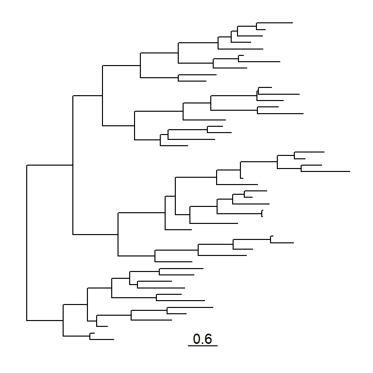
geom_treescale() supports the following parameters:
- x and y for tree scale position
- width for the length of the tree scale
- fontsize for the size of the text
- linesize for the size of the line
- offset for relative position of the line and the text
- color for color of the tree scale
ggtree(tree) + geom_treescale(x=0, y=45, width=1, color='red')
ggtree(tree) + geom_treescale(fontsize=6, linesize=2, offset=1)
We can also use theme_tree2() to display the tree scale by adding x axis.
ggtree(tree) + theme_tree2()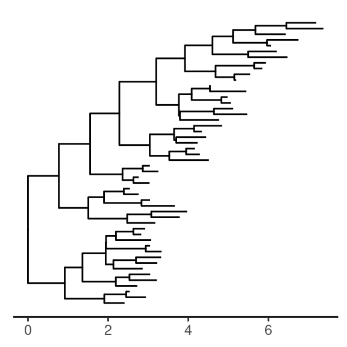
Tree scale is not restricted to evolution distance, treeio can re-scale the tree with other numerical variable (details described in session 2.3).
4.3.2 Displaying nodes/tips
Showing all the internal nodes and tips in the tree can be done by adding a layer of points using geom_nodepoint, geom_tippoint or geom_point.
ggtree(tree) + geom_point(aes(shape=isTip, color=isTip), size=3)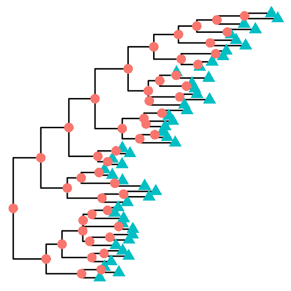
p <- ggtree(tree) + geom_nodepoint(color="#b5e521", alpha=1/4, size=10)
p + geom_tippoint(color="#FDAC4F", shape=8, size=3)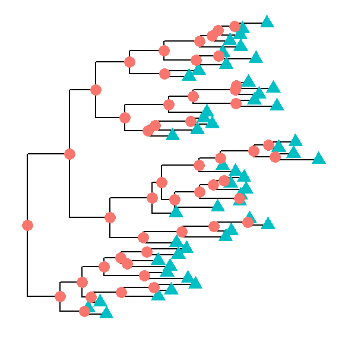
4.3.3 Displaying labels
Users can use geom_text or geom_label to display the node (if available) and tip labels simultaneously or geom_tiplab to only display tip labels:
p + geom_tiplab(size=3, color="purple")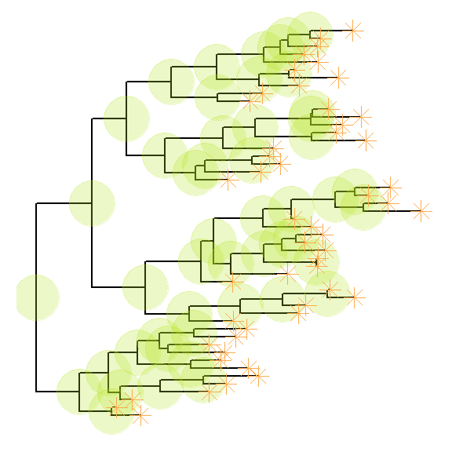
geom_tiplab not only supports using text or label geom to display labels,
it also supports image geom to label tip with image files. A corresponding
geom, geom_nodelab is also provided for displaying node labels. For details of
label nodes with images, please refer to
the vignette,
Annotating phylogenetic tree with images.
For circular and unrooted layout, ggtree supports rotating node labels according to the angles of the branches.
ggtree(tree, layout="circular") + geom_tiplab(aes(angle=angle), color='blue')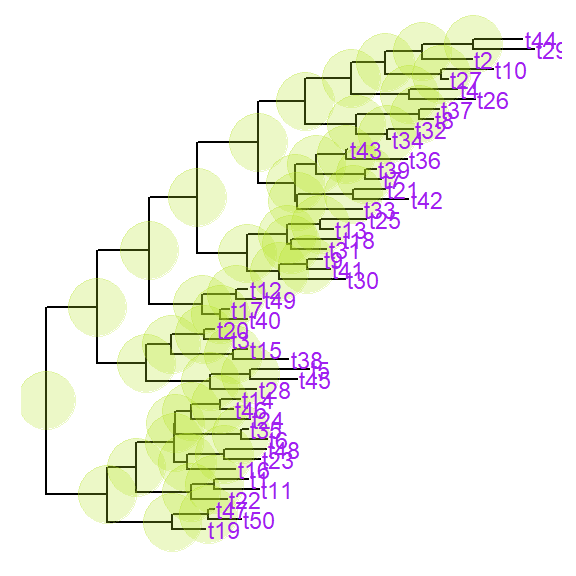
To make it more readable for human eye, ggtree provides a geom_tiplab2 for circular layout (see post 1 and 2).
ggtree(tree, layout="circular") + geom_tiplab2(color='blue')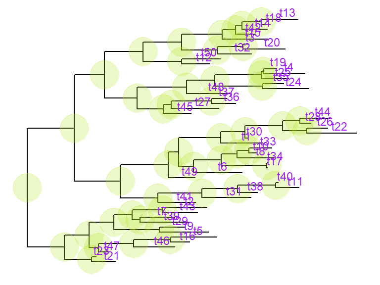
By default, the positions are based on the node positions, we can change them to based on the middle of the branch/edge.
p + geom_tiplab(aes(x=branch), size=3, color="purple", vjust=-0.3)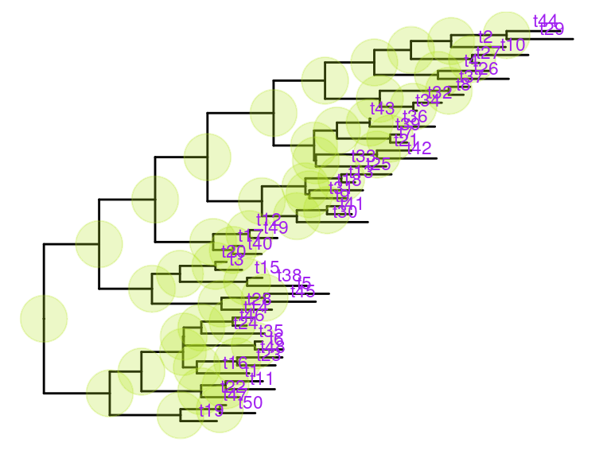
Based on the middle of branch is very useful when annotating transition from parent node to child node.
4.3.4 Color tree
In ggtree, coloring phylogenetic tree is easy, by using aes(color=VAR) to map the color of tree based on a specific variable (numeric and category are both supported).
ggtree(beast_tree, aes(color=rate)) +
scale_color_continuous(low='darkgreen', high='red') +
theme(legend.position="right")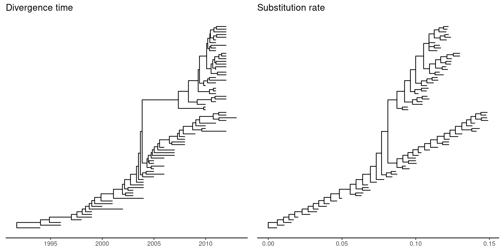
User can use any feature (if available), including clade posterior and dN/dS etc., to scale the color of the tree.
4.3.5 Rescale tree
Most of the phylogenetic trees are scaled by evolutionary distance (substitution/site). In ggtree, users can re-scale a phylogenetic tree by any numerical variable inferred by evolutionary analysis (e.g. dN/dS).
library("treeio")
beast_file <- system.file("examples/MCC_FluA_H3.tree", package="ggtree")
beast_tree <- read.beast(beast_file)
beast_tree## 'treedata' S4 object that stored information of
## 'C:/Users/YGC/Library/R/library/ggtree/examples/MCC_FluA_H3.tree'.
##
## ...@ phylo:
## Phylogenetic tree with 76 tips and 75 internal nodes.
##
## Tip labels:
## A/Hokkaido/30-1-a/2013, A/New_York/334/2004, A/New_York/463/2005, A/New_York/452/1999, A/New_York/238/2005, A/New_York/523/1998, ...
##
## Rooted; includes branch lengths.
##
## with the following features available:
## 'height', 'height_0.95_HPD', 'height_median',
## 'height_range', 'length', 'length_0.95_HPD',
## 'length_median', 'length_range', 'posterior', 'rate',
## 'rate_0.95_HPD', 'rate_median', 'rate_range'.p1 <- ggtree(beast_tree, mrsd='2013-01-01') + theme_tree2() +
ggtitle("Divergence time")
p2 <- ggtree(beast_tree, branch.length='rate') + theme_tree2() +
ggtitle("Substitution rate")
library(cowplot)
plot_grid(p1, p2, ncol=2)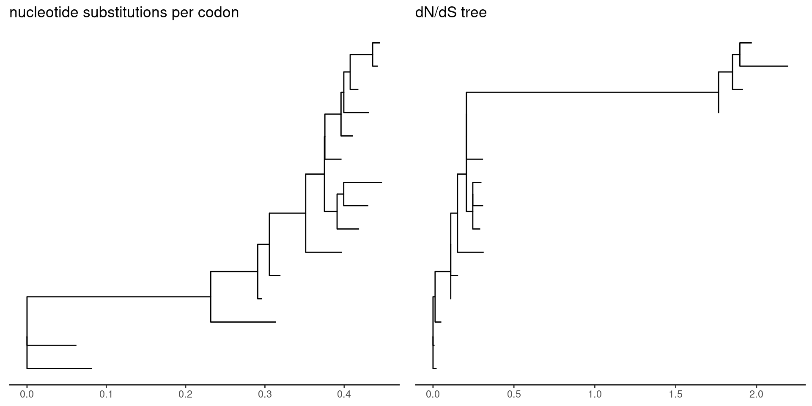
mlcfile <- system.file("extdata/PAML_Codeml", "mlc", package="treeio")
mlc_tree <- read.codeml_mlc(mlcfile)
p1 <- ggtree(mlc_tree) + theme_tree2() +
ggtitle("nucleotide substitutions per codon")
p2 <- ggtree(mlc_tree, branch.length='dN_vs_dS') + theme_tree2() +
ggtitle("dN/dS tree")
plot_grid(p1, p2, ncol=2)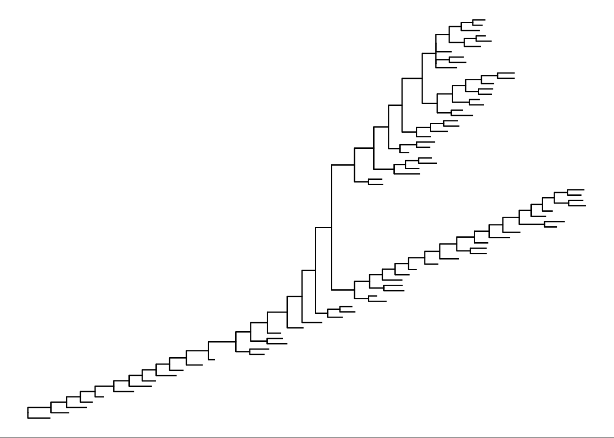
In addition to specify branch.length in tree visualization, users can change branch length stored in tree object by using rescale_tree function.
beast_tree2 <- rescale_tree(beast_tree, branch.length='rate')
ggtree(beast_tree2) + theme_tree2()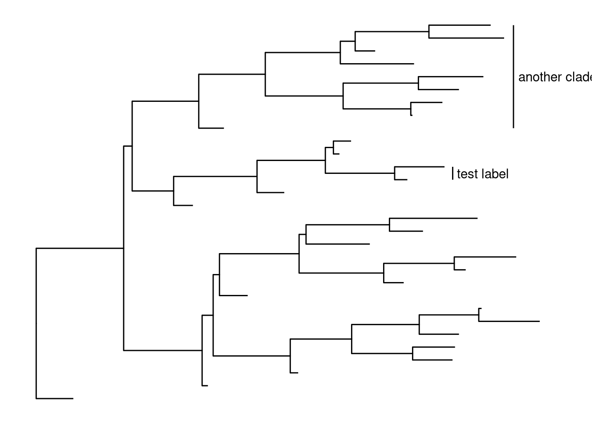
4.3.6 Modify compenents of the tree view
scale & theme
theme_tree() defined a totally blank canvas, while theme_tree2() adds
phylogenetic distance (via x-axis). These two themes all accept a parameter of
bgcolor that defined the background color. Users can pass
any theme components to the
theme_tree() function to modify them.
ggtree(rtree(30), color="red") + theme_tree("steelblue")
ggtree(rtree(20), color="white") + theme_tree("black")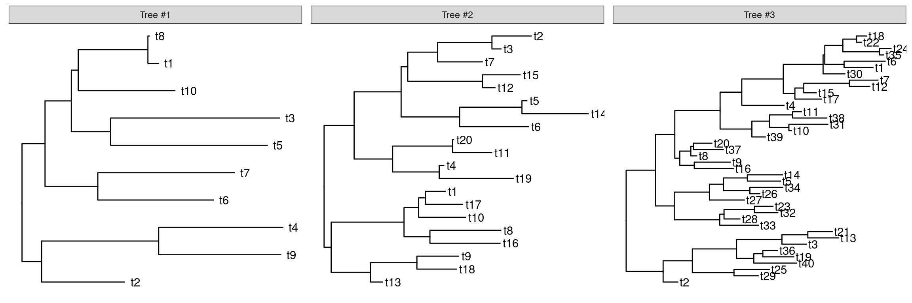
4.4 Visualize a list of trees
ggtree supports multiPhylo object and a list of trees can be viewed simultaneously.
trees <- lapply(c(10, 20, 40), rtree)
class(trees) <- "multiPhylo"
ggtree(trees) + facet_wrap(~.id, scale="free") + geom_tiplab()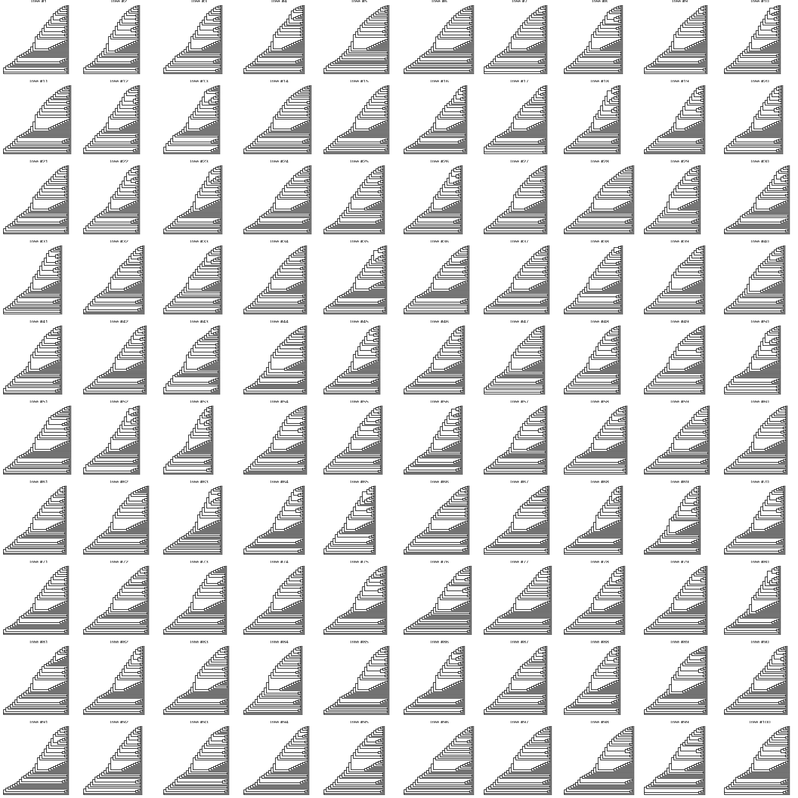
One hundred bootstrap trees can also be view simultaneously.
btrees <- read.tree(system.file("extdata/RAxML", "RAxML_bootstrap.H3", package="treeio"))
ggtree(btrees) + facet_wrap(~.id, ncol=10)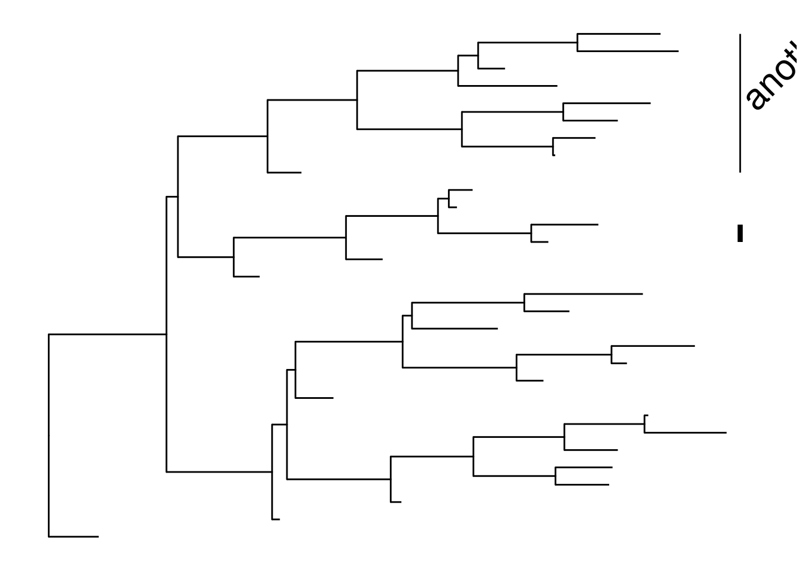
Another way to view the bootstrap trees is to merge them together to form a density tree. We can add a layer of the best tree on the top of the density tree.
p <- ggtree(btrees, layout="rectangular", color="lightblue", alpha=.3)
best_tree <- read.tree(system.file("extdata/RAxML", "RAxML_bipartitionsBranchLabels.H3", package="treeio"))
df <- fortify(best_tree, branch.length='none')
p+geom_tree(data=df, color='firebrick')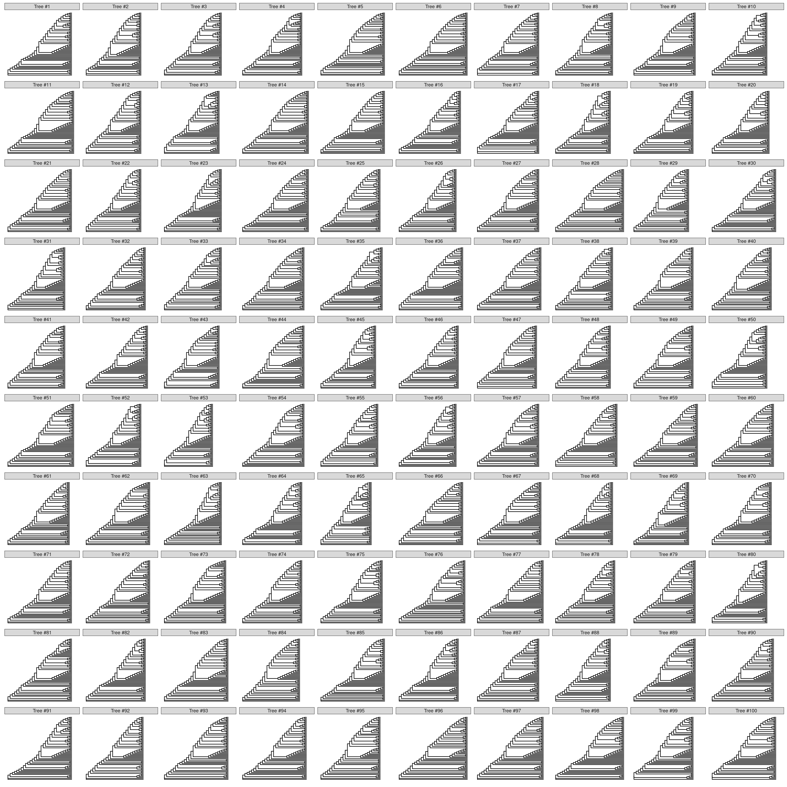
4.5 Summary
References
Page, Roderic D. M. 2002. “Visualizing Phylogenetic Trees Using TreeView.” Current Protocols in Bioinformatics Chapter 6 (August): Unit 6.2. https://doi.org/10.1002/0471250953.bi0602s01.
Chevenet, François, Christine Brun, Anne-Laure Bañuls, Bernard Jacq, and Richard Christen. 2006. “TreeDyn: Towards Dynamic Graphics and Annotations for Analyses of Trees.” BMC Bioinformatics 7 (October): 439. https://doi.org/10.1186/1471-2105-7-439.
Huson, Daniel H., and Celine Scornavacca. 2012. “Dendroscope 3: An Interactive Tool for Rooted Phylogenetic Trees and Networks.” Systematic Biology 61 (6): 1061–7. https://doi.org/10.1093/sysbio/sys062.
He, Zilong, Huangkai Zhang, Shenghan Gao, Martin J. Lercher, Wei-Hua Chen, and Songnian Hu. 2016. “Evolview V2: An Online Visualization and Management Tool for Customized and Annotated Phylogenetic Trees.” Nucleic Acids Research 44 (W1): W236–241. https://doi.org/10.1093/nar/gkw370.
Letunic, Ivica, and Peer Bork. 2007. “Interactive Tree of Life (iTOL): An Online Tool for Phylogenetic Tree Display and Annotation.” Bioinformatics 23 (1): 127–28. https://doi.org/10.1093/bioinformatics/btl529.
R Core Team. 2016. R: A Language and Environment for Statistical Computing. Vienna, Austria: R Foundation for Statistical Computing. https://www.R-project.org/.
Gentleman, Robert C, Vincent J Carey, Douglas M Bates, Ben Bolstad, Marcel Dettling, Sandrine Dudoit, Byron Ellis, et al. 2004. “Bioconductor: Open Software Development for Computational Biology and Bioinformatics.” Genome Biology 5 (10): R80. https://doi.org/10.1186/gb-2004-5-10-r80.
Wickham, Hadley. 2016. Ggplot2: Elegant Graphics for Data Analysis. Springer. http://ggplot2.org.
Wilkinson, Leland, D. Wills, D. Rope, A. Norton, and R. Dubbs. 2005. The Grammar of Graphics. 2nd edition. New York: Springer.
Paradis, Emmanuel, Julien Claude, and Korbinian Strimmer. 2004. “APE: Analyses of Phylogenetics and Evolution in R Language.” Bioinformatics 20 (2): 289–90. https://doi.org/10.1093/bioinformatics/btg412.
Revell, Liam J. 2012. “Phytools: An R Package for Phylogenetic Comparative Biology (and Other Things).” Methods in Ecology and Evolution 3 (2): 217–23. https://doi.org/10.1111/j.2041-210X.2011.00169.x.
Jombart, Thibaut, David M. Aanensen, Marc Baguelin, Paul Birrell, Simon Cauchemez, Anton Camacho, Caroline Colijn, et al. 2014. “OutbreakTools: A New Platform for Disease Outbreak Analysis Using the R Software.” Epidemics 7 (June): 28–34. https://doi.org/10.1016/j.epidem.2014.04.003.
McMurdie, Paul J., and Susan Holmes. 2013. “Phyloseq: An R Package for Reproducible Interactive Analysis and Graphics of Microbiome Census Data.” PLoS ONE 8 (4): e61217. https://doi.org/10.1371/journal.pone.0061217.
Lam, Tommy Tsan-Yuk, Chung-Chau Hon, Philippe Lemey, Oliver G. Pybus, Mang Shi, Hein Min Tun, Jun Li, Jingwei Jiang, Edward C. Holmes, and Frederick Chi-Ching Leung. 2012. “Phylodynamics of H5N1 Avian Influenza Virus in Indonesia.” Molecular Ecology 21 (12): 3062–77. https://doi.org/10.1111/j.1365-294X.2012.05577.x.
Wickham, Hadley. 2009. Ggplot2: Elegant Graphics for Data Analysis. 1st ed. Springer.
Retief, J. D. 2000. “Phylogenetic Analysis Using PHYLIP.” Methods in Molecular Biology (Clifton, N.J.) 132: 243–58.
Wilgenbusch, James C., and David Swofford. 2003. “Inferring Evolutionary Trees with PAUP*.” Current Protocols in Bioinformatics Chapter 6 (February): Unit 6.4. https://doi.org/10.1002/0471250953.bi0604s00.
Neher, Richard A., Trevor Bedford, Rodney S. Daniels, Colin A. Russell, and Boris I. Shraiman. 2016. “Prediction, Dynamics, and Visualization of Antigenic Phenotypes of Seasonal Influenza Viruses.” Proceedings of the National Academy of Sciences 113 (12): E1701–E1709. https://doi.org/10.1073/pnas.1525578113.
Liang, Huyi, Tommy Tsan-Yuk Lam, Xiaohui Fan, Xinchun Chen, Yu Zeng, Ji Zhou, Lian Duan, et al. 2014. “Expansion of Genotypic Diversity and Establishment of 2009 H1N1 Pandemic-Origin Internal Genes in Pigs in China.” Journal of Virology, July, JVI.01327–14. https://doi.org/10.1128/JVI.01327-14.